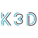
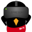
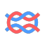

Oleksandr Dykyi
Founding Engineer 57% MATCH
First engineer at a startup. Does a bit of everything, picks the stack.
Role fit
Scored with roadmap's job loadouts: a must-have tool counts 3, an every-day tool 2, a good-to-know tool 1, times my level. Solid rings are tools I rated; dashed ones I haven't.
Best fit
Founding Engineer
First engineer at a startup. Does a bit of everything, picks the stack.
 Doppler
Doppler Tilt●●●
Tilt●●●Second fit
Platform Engineer
Builds the internal tools and paved roads other developers use to ship.
Tilt●●●KeKratixCoderCopierThird fit
Forward Deployed Engineer
Sits with a customer and ships working software inside their setup, fast.
Tilt●●●Ollama●○○LsLocalStackTailscale FunnelNext closest roles
- Staff Engineer54%
- Student / Junior Developer53%
- Indie Hacker / Solo Founder50%
- Full-stack Engineer49%
- MLOps Engineer48%
- Solutions Engineer48%
APIs, workers and databases, from one service to a dozen. 7 of 7 levels on the line.
- 1
Level 14/9 known
Package Wrangler
Install, pin and update dependencies without breaking your teammates.
On the linepnpm●●○uvMimiseBranchesnpm●●●Bun●●●PoetryHomebrew●○○CargoGo modulesPick one package manager per language and commit the lockfile.
- 2
Level 23/8 known
Build Master
Turn source into fast, cached, repeatable builds and tasks.
On the lineVite●○○MakeJustBranchesesbuild●○○TurborepoNx●○○GradleBazelMake every build and test runnable with one short command.
- 3
Level 34/7 known
Container Crafter
Package any service as an image and run a few of them together.
On the lineDocker Desktop●●○Docker Compose●●●TestcontainersBranchesPodman●●●ObOrbStack●●○Cloud Native BuildpacksDvDiveOne Dockerfile per service, one Compose file for all of them.
- 4
Level 43/8 known
Inner-Loop Runner
Edit code and see it live across many services in seconds.
On the lineCwCompose WatchTilt●●●Flisk●●●BranchesPbprocess-composeOvOvermindAirnodemon●●●LsLocalStackAim for a save-to-running loop under five seconds.
- 5
Level 53/8 known
Cluster Tamer
Develop against Kubernetes, locally or bridged to a shared cluster.
On the lineKdkindHelm●●○SkaffoldBranches
k3dMnminikube●○○
TelepresenceMrmirrordK9k9s●●●Only reach for Kubernetes locally when production runs on it.
- 6
Level 64/7 known
Agent Wrangler
Run multi-agent systems with tools, memory and models on your own machine.
On the lineVercel AI SDKModel Context Protocol●●○Ollama●○○BranchesLangGraph●○○Mastra
LangfuseClaude Code●●○Treat the agent like another service with health checks and logs.
- 7
Level 76/7 known
Platform Architect
Give every team golden paths, a portal and infrastructure as code.
On the lineTerraform●●●GitHub Actions●●●OpenTelemetry●○○BranchesOpenTofuPulumi●○○Argo CD●○○Backstage●●●Write down the path you took so the next team gets it for free.
Expert in
27 tools I'd teach. Scores are roadmap's public checklist, 10 points a check.
Open-source terminal coding agent for any model
OpenAI's coding agent for terminal, IDE and cloud
Upstream container orchestration, as a reference point
JavaScript runtime, package manager and bundler in one
Shell script to manage Node.js versions
HashiCorp's declarative infrastructure as code in HCL
TypeScript ORM with schema migrations and Studio
Deploy and develop AWS Lambda apps from YAML
Define and run multi-container apps from YAML
Agent skills
Skills on roadmap's Skills tab that match the tools I rated expert or use often, with the score Haiku got for picking and following each one. They match my tools; this page doesn't say I use them.
codex40/100Ask the OpenAI Codex CLI for an independent second opinion on your code or plan.
Matches Codex (expert)terraform-policy100/100Write, test and convert Terraform Policy files (.policy.hcl), including Sentinel to tfpolicy.
Matches Terraform (expert)prisma-orm-setup100/100Set up Prisma ORM in an app or repair a broken database connection.
Matches Prisma (expert)github-actions-templates100/100Build GitHub Actions workflows for test, build, push image and deploy.
Matches GitHub Actions (expert)flisk-e2e-author100/100Add or change a Flisk end-to-end test: decide if needed, scaffold from the agent suite, show pass and break.
Matches Flisk (expert)git-guardrails-claude-code100/100Add a Claude Code hook that blocks git push, reset --hard, clean -f, branch -D and similar.
Matches Claude Code (use often)Toolkit
All 95 tools I rated, by level.
Expert
27JavaScript runtime, package manager and bundler in one
The package manager bundled with Node.js
Shell script to manage Node.js versions
Node package manager with workspaces and Plug'n'Play
Define and run multi-container apps from YAML
Upstream container orchestration, as a reference point
Daemonless, rootless container engine
Local dev loop for microservices and multi-agent stacks
Terminal UI for navigating and managing clusters
Restarts a Node.js process when files change
Tilt●●●Live-update loop for multi-service apps
Deploy and develop AWS Lambda apps from YAML
 Yeoman●●●
Yeoman●●●Generator ecosystem for scaffolding projects
TypeScript ORM with schema migrations and Studio
OpenAI's coding agent for terminal, IDE and cloud
AI-first code editor forked from VS Code
Cognition's autonomous cloud software engineer
Cognition's agentic IDE, renamed from Windsurf
GitHub's AI pair programmer, agent mode and cloud agent
Official community registry of public MCP servers
Open-source terminal coding agent for any model
AWS's native declarative infrastructure templates
Open-source developer portal framework by Spotify
GitHub's built-in dependency and security updates
CI/CD workflows built into GitHub
HashiCorp's declarative infrastructure as code in HCL
Orchestration wrapper for Terraform and OpenTofu stacks
Use often
25Fast, disk-efficient Node package manager
Configurable module bundler for JavaScript
Docker Engine, Compose and Kubernetes in a desktop app
The open-source Docker daemon and CLI for Linux
Linux VMs with containerd for macOS and Linux
Fast, light Docker and Linux VMs for macOS
Package manager and templating for Kubernetes
The official Kubernetes command-line client
AWS CLI to build and run Lambda apps locally
Small web framework for any JavaScript runtime
Structured Node.js framework for server apps
Run Netlify sites and functions locally
React framework mode, successor to Remix
Cloudflare Workers CLI with local workerd dev
Expose local services through Cloudflare via cloudflared
Promise-based ORM for Node.js
Decorator-based ORM for TypeScript
Anthropic's agentic coding tool for the terminal and IDEs
Open-source coding agent for VS Code and the terminal
Google's open-source terminal agent for Gemini
Open protocol and SDKs connecting agents to tools and data
VS Code agent forked from Cline, now discontinued
Directory and CLI for installing agent skills
AWS infrastructure in code, synthesized to CloudFormation
Pipelines built into GitLab, hosted or self-managed
Have used
43 SigNoz●○○
SigNoz●○○